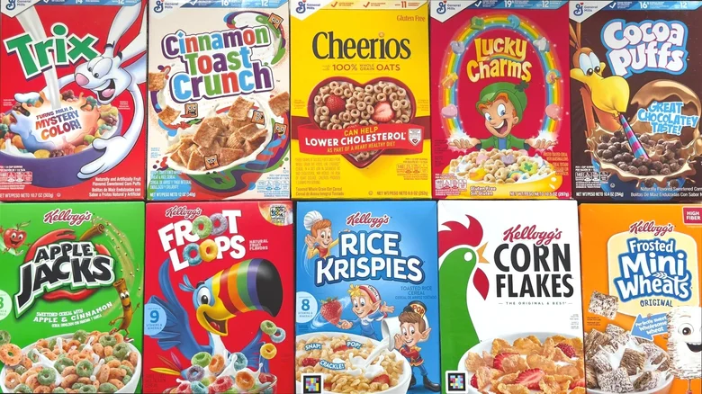

Cohort 34's Favorite and Least Favorite Cereals
Favorites
Least Favorites

Introduction and Paragraph explaining the page
Our Favorite Cereals
Lucky Charms
LIFE
Frooty Pebbles
Cinnamon Toast Crunch
Frosted Flakes
Our Least Favorite Cereals
Grape Nuts
Raisin Bran
Corn Flakes
Corn Nuts
Coco Pebbles